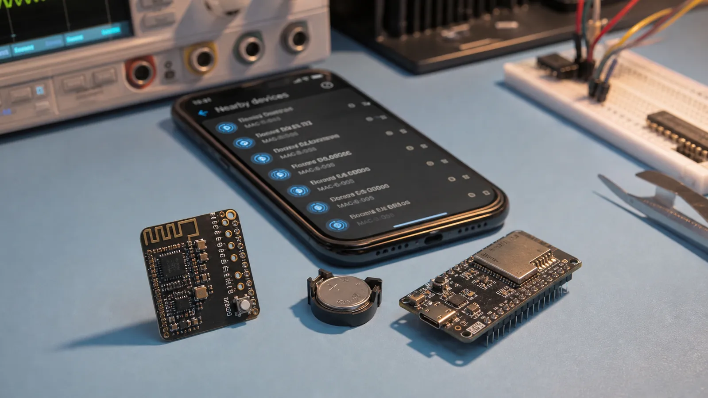

قبل از اتصال، دستگاه باید حضور و قابلیت خود را اعلام کند. Advertising میتواند فقط یک پیام کوتاه پخش کند، اجازه اسکن بدهد یا راه اتصال را باز کند. طراحی درست این داده روی کشفپذیری، مصرف باتری و تجربه موبایل اثر مستقیم دارد.
Advertiser در فاصلههای مشخص روی کانالهای تبلیغ پیام میفرستد. Scanner این پیامها را میشنود و بر اساس آدرس، نام، UUID سرویس یا داده سازنده تصمیم میگیرد. کوتاهکردن Interval کشف را سریعتر میکند اما مصرف و ازدحام را بالا میبرد.
Connectable Undirected برای بیشتر محصولاتی است که باید توسط هر Central پیدا و متصل شوند. Directed برای اتصال سریع به دستگاه مشخص به کار میرود. Scannable اجازه دریافت Scan Response میدهد و Non-Connectable فقط داده پخش میکند. Extended Advertising فضای بیشتر و PHYهای متنوعتری میدهد، مشروط به پشتیبانی دو طرف.
اگر داده در بسته اصلی جا نشود، Scanner میتواند Scan Request بفرستد و دستگاه با Scan Response اطلاعات تکمیلی مثل نام کامل پاسخ دهد. Beacon معمولاً بدون اتصال داده شناسه یا تلهمتری را پخش میکند. قالبهای iBeacon، Eddystone و AltBeacon قراردادهای متفاوتی برای چیدمان این داده هستند.
هر بخش Advertising با یک بایت Length، سپس Type و Data ساخته میشود. Flags وضعیت عمومی را میگوید؛ Local Name برای نمایش انسانی است؛ UUID سرویس به برنامه اجازه فیلتر میدهد؛ Service Data و Manufacturer Data داده اختصاصی را حمل میکنند. قبل از ارسال، مجموع طول و اندینبودن عددها را کنترل کنید.
برای دماسنج، Flags را در بسته اصلی بگذارید، UUID سرویس محیطی را اضافه کنید و نام کوتاه را در فضای باقیمانده قرار دهید. اگر لازم است مدل و نسخه Firmware دیده شود، آن را به Scan Response منتقل کنید. داده حساس را هرگز بدون طراحی امنیتی در Advertising نفرستید.